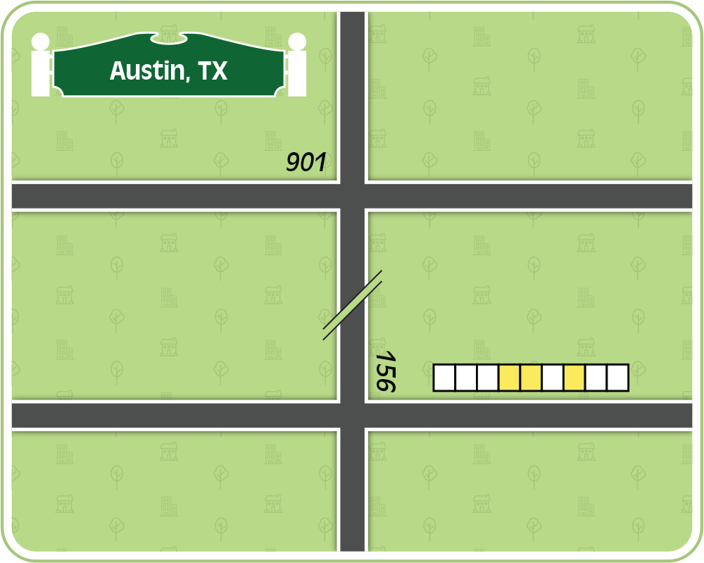
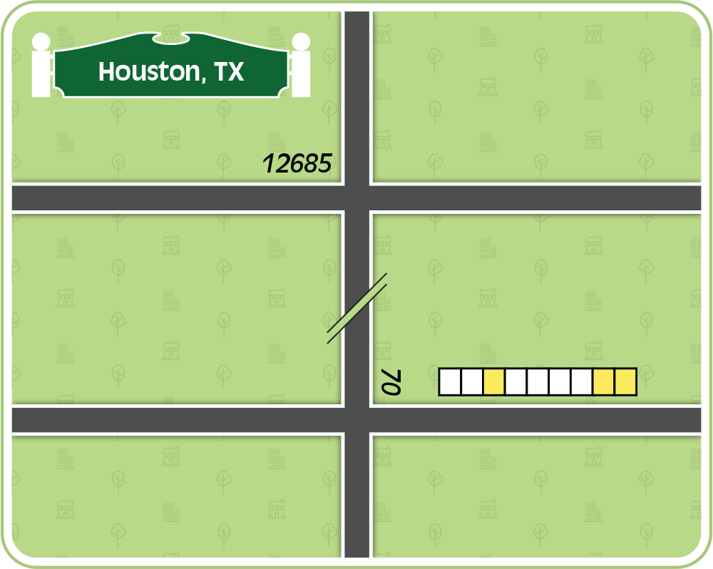
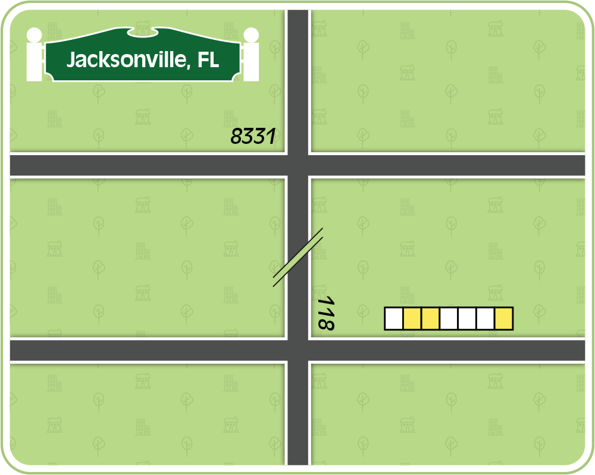
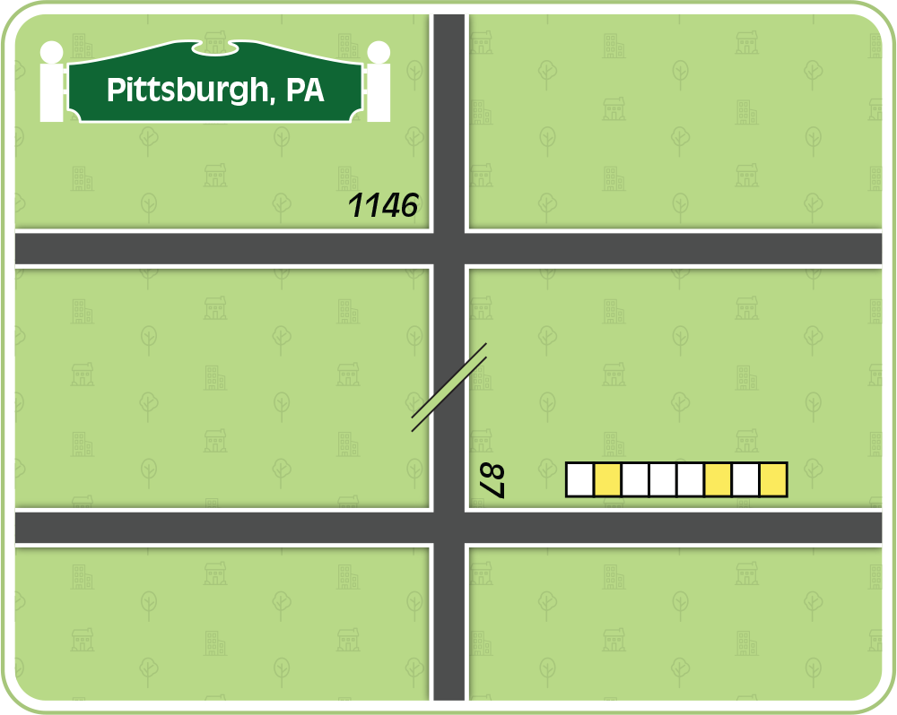
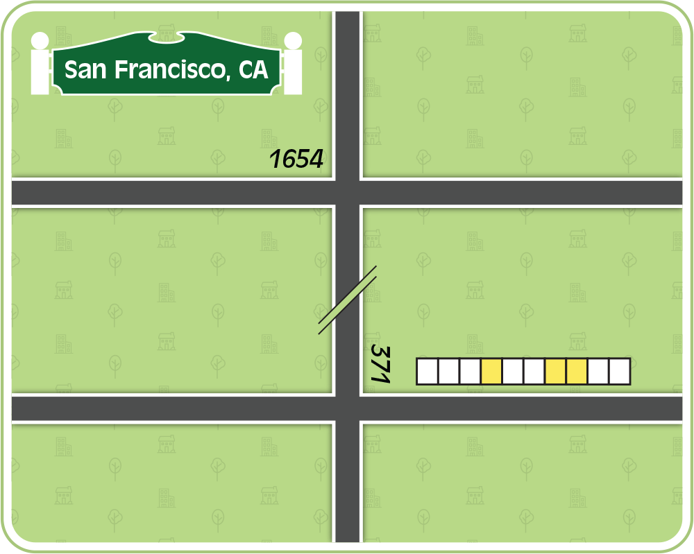

<div class="flavor">
  <p>The Ministers originally sought to flee, but kept winding up right back where they started.</p>
</div>

<div class="puzzle-content">
<a href="rotch-meta-1.png" target="_blank"></a>
<a href="rotch-meta-2.png" target="_blank"></a>
<a href="rotch-meta-3.png" target="_blank"></a>
<a href="rotch-meta-4.png" target="_blank"></a>
<a href="rotch-meta-5.png" target="_blank"></a>
</div>
